Интермеццо 5: Стоимость вычислений
(check-expect (f 0) 0) (check-expect (f 1) 1) (check-expect (f 2) 8)
В том же духе определение времени оценки программного приложения для конкретных входных данных говорит вам, сколько времени потребуется, чтобы вычислить ответы для этих входных данных - и ничего больше. Вы также можете перечитать Локальные определения и обсуждение проверок целостности в Проект: База данных. У вас может быть две программы - prog-linear и prog-square - которые вычисляют одни и те же ответы при одинаковых входных данных, и вы можете обнаружить, что для всех выбранных входных данных prog-linear всегда вычисляет ответ быстрее, чем prog-square. В Making Choices представлена именно такая пара программ: gcd, структурно рекурсивная программа, и gcd-generative, эквивалентная, но генерирующе-рекурсивная программа. Сравнение времени показывает, что последняя намного быстрее, чем первая.
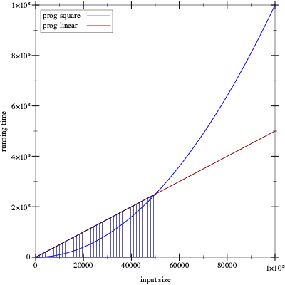
Рисунок 176: Сравнение времени выполнения двух выражений
Насколько вы уверены, что хотите использовать prog-linear вместо prog-square? Рассмотрим график на рис. 176. На этом графике по оси абсцисс записан размер входных данных, например, длина списка, а по оси ординат записано время, необходимое для вычисления ответа для входных данных определенного размер. Предположим, что прямая линия представляет время выполнения функции prog-linear, а изогнутая диаграмма представляет собой prog-square. В заштрихованной области prog-linear занимает больше времени, чем prog-square, но на краю этой области два графика пересекаются, и справа от него производительность prog-square хуже, чем у prog-linear. Если по каким-либо причинам вы оценили производительность prog-linear и prog-square только для размеров входных данных в заштрихованной области, и если бы ваши клиенты должны были запускать вашу программу в основном на входных данных, которые попадают в незатененную область, вы бы поставили неправильную программу.
Это интермеццо знакомит с идеей algorithmic analysis(анализа алгоритмов), который позволяет программистам делать общие утверждения о производительности программы, а всем остальным - о развитии функции. Мы благодарим Прабхакара Рагде за то, что он поделился своими заметками о соединении первого издания этой книги с анализом алгоритмов. Любой серьезный программист и ученый должен со временем досконально ознакомиться с этим понятием. Это основа для анализа характеристик производительности программ. Чтобы правильно понять идею, вам нужно будет проработать учебник.
Конкретное время, абстрактное время
(how-many some-non-empty-list) == (cond [(empty? some-non-empty-list) 0] [else (+ (how-many (rest some-non-empty-list)) 1)]) == (cond [#false 0] [else (+ (how-many (rest some-non-empty-list)) 1)]) == (cond [else (+ (how-many (rest some-non-empty-list)) 1)]) == (+ (how-many (rest some-non-empty-list)) 1)
(empty? some-non-empty-list)
В качестве альтернативы, если мы предположим, что предикаты и селекторы занимают некоторое фиксированное время, время, необходимое how-many для определения длины списка, зависит от количества выполняемых рекурсивных шагов. Точнее, вычисление (how-many some-list) требует примерно n раз некоторой фиксированного количества времени, где n - длина списка или, что то же самое, количество повторений программы.
Обобщение этого примера предполагает, что время выполнения зависит от размера входных данных и что количество рекурсивных шагов является хорошей оценкой длины последовательности вычисления. По этой причине специалисты по информатике обсуждают abstract running time(абстрактное время выполнения) программы как взаимосвязь между размером входных данных и количеством рекурсивных шагов в вычислении. «Абстракция», потому что мера игнорирует детали того, сколько времени занимают примитивные шаги. В нашем первом примере размер ввода - это количество элементов в списке. Таким образом, для списка из одного элемента требуется один рекурсивный шаг, для списка из двух требуется два шага, а для списка из n элементов - это n шагов.
Специалисты по информатике используют фразу: программа f выполняется «порядка n шагов», чтобы сформулировать утверждение об абстрактном времени работы f. Чтобы использовать фразу правильно, она должна сопровождаться объяснением n, например, «подсчитывает количество элементов в данном списке» или «это количество цифр в данном числе». Без такого объяснения исходная фраза фактически бессмысленна.
(define (contains-flatt? lo-names) (cond [(empty? lo-names) #false] [(cons? lo-names) (or (string=? (first lo-names) 'flatt) (contains-flatt? (rest lo-names)))]))
(contains-flatt? (list "flatt" "robot" "ball" "game-boy" "pokemon"))
(contains-flatt? (list "robot" "ball" "game-boy" "pokemon" "flatt"))
-
Анализ наилучшего случая(best-case analysis) фокусируется на классе входных данных, для которого программа может легко найти ответ. В нашем текущем примере список, который начинается с 'flatt, является лучшим типом ввода.
-
В свою очередь, анализ наихудшего случая(worst-case analysis) определяет, насколько плохо программа выполняет те входные данные, которые вызывают у нее наибольшую нагрузку. Функция contains-flatt? показывает худшую производительность, когда 'flatt находится в конце входного списка.
-
FНаконец, средний анализ(average analysis) начинается с идеи, что программисты не могут предположить, что входные данные всегда имеют наилучшую возможную форму, и что они должны надеяться, что входные данные не имеют худшей из возможных форм. Во многих случаях они должны оценить average (среднее) время, затрачиваемое на выполнение программы. Например, contains-flatt? в среднем находит 'flatt где-нибудь в середине списка ввода. Таким образом, если последний состоит из n элементов, среднее время работы contains-flatt? является
 , то
есть она повторяется вдвое реже, чем количество элементов на входе.
, то
есть она повторяется вдвое реже, чем количество элементов на входе.
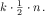
(sort (list 3 1 2)) == (insert 3 (sort (list 1 2))) == (insert 3 (insert 1 (sort (list 2)))) == (insert 3 (insert 1 (insert 2 (sort '())))) == (insert 3 (insert 1 (insert 2 '()))) == (insert 3 (insert 1 (list 2))) == (insert 3 (cons 2 (insert 1 '()))) == (insert 3 (list 2 1)) == (list 3 2 1)
Вставка элемента похожа на его поиск, поэтому неудивительно, что производительность insert и contains-flatt? похожи. Применение insert к списку из l элементов запускается между 0 и l рекурсивными шагами. В среднем мы предполагаем, что для этого требуется l/2, что означает, что insert занимает «порядка l шагов», где l - длина данного списка.
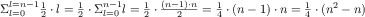
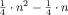
См. Упражнение 486, чтобы узнать, почему это так.
Мы также можем придерживаться меньшего формализма и строгости. Поскольку sort использует insert один раз для каждого элемента в списке, мы получаем «порядок n» шагов вставки, где n - размер списка. Поскольку для insert требуются шаги 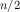, теперь мы видим, что для процесса сортировки требуются шаги 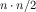 или «порядка n2».
(define (inf l) (cond [(empty? (rest l)) (first l)] [else (if (< (first l) (inf (rest l))) (first l) (inf (rest l)))]))
исходное выражение
требует двух вычислений
(inf (list 3 2 1 0))
(inf (list 2 1 0))
(inf (list 2 1 0))
(inf (list 1 0))
(inf (list 1 0))
(inf (list 0))
Стоп! Если вы обратили пристальное внимание, то знаете, что приведенное выше предложение
неаккуратно. Программе inf действительно нужны рекурсивные шаги
 для списка из
n элементов. Что здесь происходит?
для списка из
n элементов. Что здесь происходит?
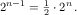
(define (infL l) (cond [(empty? (rest l)) (first l)] [else (local ((define s (infL (rest l)))) (if (< (first l) s) (first l) s))]))
Упражнение 485. Числовое дерево - это либо числовое дерево, либо пара числовых деревьев. Создайте sum-tree, которое определяет сумму чисел в дереве. Каково его абстрактное время работы? Каков допустимый размер такого дерева? Какая наихудшая форма дерева? Какая форма лучше всего?
Определение “On the Order Of” (в порядке)
-
Абстрактное измерение производительности - это соотношение между двумя величинами: размером входных данных и количеством рекурсивных шагов, необходимых для определения ответа. Связь на самом деле представляет собой математическую функцию, которая сопоставляет одно натуральное число (размер входных данных) с другим (необходимое время).
-
Следовательно, общее утверждение о производительности программы - это утверждение о функции, а сравнение производительности двух программ требует сравнения двух таких функций.
В упражнении 245 решается другой вопрос, а именно: можем ли мы сформулировать программу, которая решает, равны ли две другие программы. В этом интермеццо мы не пишем программу; мы используем простые математические аргументы.
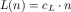
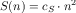
Скажем, мы выяснили, что cL = 1000 и cS = 1.. Затем мы можем свести эти абстрактные времена работы в таблицу, чтобы сделать сравнение конкретным:
n
10
100
1000
2000
prog-square
100
10000
1000000
4000000
prog-linear
10000
100000
1000000
2000000
Это последнее открытие является ключом к точному определению фразы «порядок». Если функция f для натуральных чисел производит большие числа, чем некоторая функция g для всех натуральных чисел, тогда f явно больше, чем g. Но что, если это сравнение не удастся только для нескольких входов, скажем, для 1000 или 1000000, и будет верным для всех остальных? В этом случае мы все равно хотели бы сказать, что f лучше, чем g. И это подводит нас к следующему определению.
Определение Учитывая функцию g от натуральных чисел, O(g) (произносится: «big-O of g») является классом функций от натуральных чисел. Функция f является членом O(g), если существуют числа c и bigEnough такие, чтодля всех это правда, что 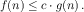
Терминология Если , мы говорим, что f не хуже, чем g.
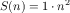
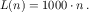
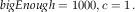
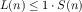
Выберите конкретный номер n0, удовлетворяющий условию:Мы используем символическое имя n0, чтобы не делать никаких конкретных предположений относительно него. Теперь вспомним из алгебры, что вы можете умножить обе части неравенства на один и тот же положительный множитель, и неравенство по-прежнему выполняется. Мы используем n0:На этом этапе настало время заметить, что левая часть неравенства - это просто L(n0), а правая часть - это S(n0):Поскольку n0 - общее число правильного типа, мы показали именно то, что хотели показать.
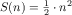
Наконец, большинство людей используют O вместе с сокращенным обозначением функций. Таким образом, они говорят, что время выполнения how-many равно O(n), потому что они склонны думать о n как об аббревиатуре (математической) функции id(n) = n. Точно так же это использование приводит к утверждению, что время работы sort в наихудшем случае равно O(n2), а inc’s is O(2n) - опять же, потому что n2 является сокращением для функции sqr(n) = n2, а 2n - сокращением от expt(n) = 2n.
Стоп! Что значит сказать, что производительность функции равна O(1)?
Упражнение 486. В первом пункте мы утверждали, что функция f(n) = n2 + n принадлежит классу O(n2). Определите пару чисел c и bigEnough, которые подтверждают это утверждение.
Упражнение 487. Рассмотрим функции f(n) = 2n и g(n) = 1000 n. Докажите, что g принадлежит O(f), а это означает, что f, абстрактно говоря, дороже (или, по крайней мере, в равной степени), чем g. Если размер ввода гарантированно составляет от 3 до 12, какая функция лучше?
Упражнение 488. Сравните 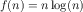 и 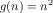. Принадлежит ли f к O(g) или g к O(f)?
Почему программы используют предикаты и селекторы?
; Number [List-of Number] -> Boolean ; is x in l (check-expect (search 0 '(3 2 1 0)) #true) (check-expect (search 4 '(3 2 1 0)) #false)
(define (searchL x l) (cond [(empty? l) #false] [else (or (= (first l) x) (searchL x (rest l)))]))
(define (searchS x l) (cond [(= (length l) 0) #false] [else (or (= (first l) x) (searchS x (rest l)))]))
Разработка searchS не соответствует рецепту структурного проектирования. Она действительно использует генеративную рекурсию. Вместо этого она вдохновлена идеей, что списки - это контейнеры, имеющие размер. Следовательно, программа может проверить этот размер на 0, что эквивалентно проверке на пустоту.
Хотя эта идея функционально верна, она предполагает, что стоимость операций, предоставляемых *SL, является фиксированной константой. Однако, если length больше похожа на how-many, searchS будет медленнее, чем searchL. Используя нашу новую терминологию, searchL использует O(n) рекурсивных шагов, в то время как searchS требует O(n2) шагов для списка из n элементов. Короче говоря, использование произвольных операций *SL для формулирования условий может привести к смещению производительности с одного класса функций на гораздо худший.
; N -> [List Number Number] ; how long do searchS and searchL take ; to look for n in (list 0 ... (- n 1)) (define (timing n) (local ((define long-list (build-list n (lambda (x) x)))) (list (time (searchS n long-list)) (time (searchL n long-list)))))
Стоп! Проведите эксперимент.
Предполагая, что вы завершили эксперимент, теперь вы знаете, что length занимает время, пропорциональное размеру данного списка. “S” в searchS означает “squared”(в квадрате), потому что время её работы составляет O(n2). Но не спешите с выводом, что такого рода См. Раздел Представления данных с аккумуляторами, чтобы узнать, как другие языки отслеживают размер контейнера. рассуждения справедливы для каждого языка программирования, с которым вы столкнетесь. Многие работают с контейнерами иначе, чем *SL. Понимание того, как это делается, требует еще одной концепции разработки - аккумуляторов, о которых мы расскажем в заключительной части этой книги.